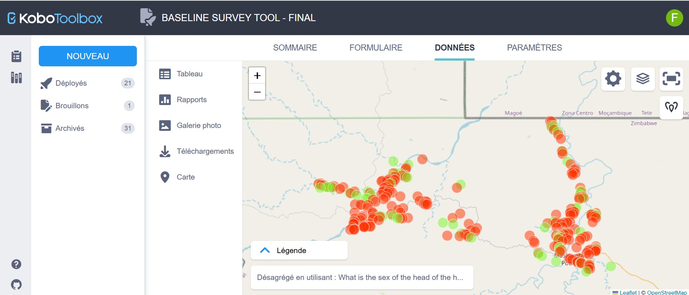
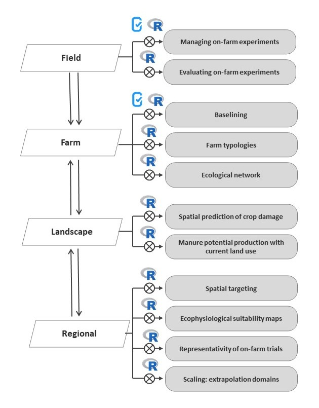

Chapter 1 Introduction
1.1 Purpose of this book
Living Labs - defined as physical or virtual spaces that bring together multiple stakeholders to collaboratively tackle societal challenges, fostering co-creation and real-world testing of solutions (Hossain, Leminen, and Westerlund 2019) - have become increasingly popular in development-oriented agronomy. Living Landscapes are territories shaped by the interactions between environmental processes, food production, governance, markets, and human decision-making. However, we observe that codesign processes nurtured in Living Labs and Living Landscapes often favor local knowledge over academic knowledge and are rarely informed by systematically collected data and analysis of this data (Baudron 2024).
While local knowledge is invaluable, relying exclusively on it can inadvertently limit the creativity and problem-solving potential of the codesign process (Asten et al. 2009). In practice, this can lead to innovations that reflect existing practices (e.g., manure management, intercropping, minimum tillage) rather than exploring novel solutions to the key bottlenecks in the systems under study. While place-based research yields rich, context-specific insights, it is inherently time- and resource-intensive, making it essential to assess the representativeness of the case study so that the outcomes of the participatory process can be effectively scaled to broader regions.
We argue that researchers have a crucial role in generating, organizing, analyzing, and presenting data at every stage of the codesign process, from diagnostic and needs assessment, to prototyping, testing, and evaluation (Giller et al. 2008). Diagnostics and analytical tools from systems agronomy can help make challenges, opportunities, and trade-offs more explicit, supporting evidence-based decision making and enhancing the creativity of the codesign process. Furthermore, because such place-based codesign is deeply valuable yet time-intensive, we argue that researchers must systematically assess the representativeness of the study sites to determine the broader applicability of local insights and ensure that participatory outcomes can be effectively scaled.
At the same time, data cannot simply be presented to Living Lab members in raw form. To be useful in codesign, data must be adapted to the audience, for example through visualizations, simplified tables, interactive tools, or role-playing exercises, while still allowing participants to draw their own conclusions. This approach aligns with the principles of discovery learning, where participants engage actively with information, explore patterns, and derive insights themselves, thereby improving understanding, ownership, and the quality of the codesign outcomes. Moreover, the participatory process should engage a diverse range of stakeholders, including policymakers, who require clear evidence on how representative the broader network of research sites is in order to support wider scaling and policy integration.
One example of a process where academic knowledge is essential and cannot be substituted by local knowledge is de novo design — the creation of novel cropping or farming systems that break away from existing practices and explore new possibilities (Meynard, Dedieu, and Bos 2012). Data-driven and model-based approaches allow researchers to explore alternative designs systematically, which can then feed into the codesign process in Living Labs and Living Landscapes.
This book presents a set of reproducible, data-driven workflows integrating KoBoToolBox with R. With the use of examples, the book provides clear, step-by-step guidance for researchers and practitioners on how data can be used to enrich codesign processes. The book was compiled using the bookdown package (Xie 2025), which enables the seamless integration of R code, analytical results, and narrative into a single, fully reproducible document.
The reader may ask: ‘Why a whole book on workflows, when such workflows can nowadays be generated in no time by Artificial Intelligence?’ This is a valid question. However, what we want to share is not so much the workflows themselves, but rather a series of methods that we believe are central to systems agronomy. The code is written in a deliberately straightforward style, avoiding unnecessary use of functions, loops and other layers of abstraction, with the aim of making the underlying logic clear to the reader and allowing subsequent adaptation and refinement to specific case studies. The workflows should therefore be seen as building blocks that are easy to understand and adapt. We believe that the knowledge acquired by working through them will be invaluable in critically assessing, adapting and refining workflows generated with the help of AI.
A web version of this book is also available here: https://fbaudron.github.io/web_book_standardized_workflows/.
1.2 KoboToolBox and R
For the workflows in this book to be usable by the largest number, our approach is based on two open-source softwares: KoboToolBox (https://www.kobotoolbox.org/) and R (https://www.r-project.org/) operated through R-Studio Desktop (https://posit.co/download/rstudio-desktop/). We use these softwares because they are open-source, used by a large community of practice, and under constant development.
Digital surveys (e.g., using KoboToolBox) are much faster than surveys using pen and paper, reduce errors (no transcription and error trapping during recording) and allow for the data to be immediately available right after it’s collected. Digital surveys also offer the possibility of associating geolocations and multimedia data.
KoboToolBox is free and open access, and includes a free secured server, with summary analysis and mapping functions (a major advantage of KoboToolBox over alternatives, Figure 1.1). KoboToolBox offers a set of easy to use tools, but complex logics can be built with them. KoboToolBox produces sharable forms and is XLSForm compatible (XLSForm is a simple spreadsheet format for designing digital data-collection forms). Data collection can be done offline. Progress of data collection can be monitored without being on-site. KoboToolBox also provides a question library, and has a growing community of practice and online help.

Figure 1.1: Screenshot of the mapping functions of the KoboToolBox server
R is an open-source and free software environment (both a language and a program). As a program language software, it offers replicability and shareability (a major difference with ‘point-and-click’ softwares). R has a large online community, is probably one of the most powerful computer environment for data analysis currently available, and became very popular across many disciplines. Amongst other functions, R reads and writes files, manipulates and summarizes data, runs statistical tests and models, and produces well-designed publication-quality plots. The core functionalities of R are extended by hundreds of packages (and growing). R interacts with other softwares, and the size of datasets analyzed is only limited by the machine used.
1.3 Structure of this book
This book provides a collection of XLSForms (input to KoboToolBox) and well-documented R scripts developed during the implementation of the CGIAR initiative ‘Transformational Agroecology across Food, Land, and Water Systems’ (https://www.cgiar.org/news-events/news/cgiars-agroecology-initiative-transforming-food-land-and-water-systems-across-the-global-south) and the CGIAR Multifunctional Landscape (MFL) science program (https://www.cgiar.org/cgiar-research-portfolio-2025-2030/multifunctional-landscapes), and that can be adapted to other contexts and projects (Figure 1.2).

Figure 1.2: Proposed workflow to support the codesign process with data, using two open-source softwares: KoboToolBox and R
As such, the book is structured around two introductory chapters to prepare the workflows:
- Learning KoboToolBox and R
- Spatial datasets
Two chapters at plot-scale:
- Managing on-farm experiments
- Evaluation on-farm experiments
Three chapters at farm-scale:
- Baselining
- Farm typologies
- Ecological Network Analysis
Two chapters at landscape-scale:
- Spatial prediction of crop damage
- Potential manure production under current land use
And four chapters at regional scale:
- Spatial recommendation domains
- Crop eco-physiological suitability
- Soil and climate representativeness of trials
- Technology extrapolation domains